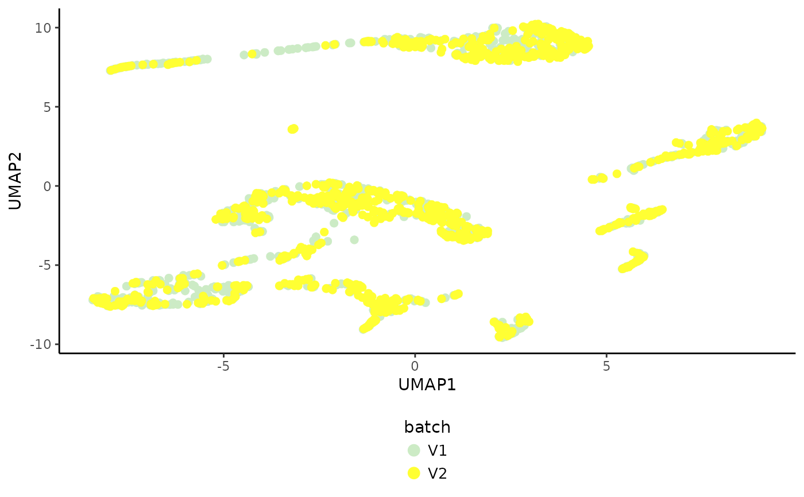
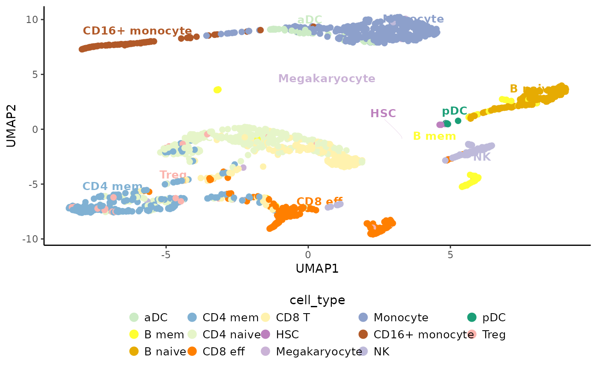

Plot categorical variables in dimensional reduction.
Usage
PlotDimRed.SingleCellExperiment(
object,
color.by,
dimred,
dims,
use.color,
point.size,
point.stroke,
legend.nrow,
seed.color,
label,
plot.theme,
rasterise,
rasterise.dpi,
legend.justification,
legend.size,
legend.title
)
# S4 method for class 'SingleCellExperiment'
PlotDimRed(
object,
color.by,
dimred = tail(reducedDimNames(object), n = 1),
dims = 1:2,
use.color = NULL,
point.size = 1,
point.stroke = 1,
legend.nrow = 2,
seed.color = 123,
label = FALSE,
plot.theme = theme_classic(),
rasterise = (ncol(object) <= 30000),
rasterise.dpi = 300,
legend.justification = "center",
legend.size = 10,
legend.title = color.by
)Arguments
- object
An object of
SingleCellExperimentclass.- color.by
Categorical variable available in
colData(object)to plot.- dimred
Dimensional reduction available in
ReducedDimNames(object)to plot. By default the last dimensional reduction in the object is used.- dims
Dimensions from the dimensional reduction embedding to plot.
- use.color
Character specifying the colors. By default
NULL, i.e., colors are randomly chosen based on the seed given atseed.color.- point.size
Size of points. By default
1.- point.stroke
Size of stroke. By default
1.- legend.nrow
Display legend items by this number of rows. By default
2.- seed.color
Seed to randomly select colors. By default
123.- label
Logical to add or not categorical labels to the centroid categories. By default
FALSE, i.e., labels are not added.- plot.theme
Plot theme available in
ggplot2. By defaulttheme_classic().- rasterise
Logical specifying if points should be rasterised or not. By default
TRUE, if more than 3e4 cells, otherwiseFALSE.- rasterise.dpi
In case
rasterise = TRUE, DPI to use. By default300.- legend.justification
Legend justification. By default
"center".- legend.size
Legend size. By default
10- legend.title
Legend title. By default the same as given at
color.by.
Examples
# Import package
suppressPackageStartupMessages(library("SingleCellExperiment"))
# Create toy SCE data
batches <- c("b1", "b2")
set.seed(239)
batch <- sample(x = batches, size = nrow(iris), replace = TRUE)
sce <- SingleCellExperiment(assays = list(logcounts = t(iris[,1:4])),
colData = DataFrame("Species" = iris$Species,
"Batch" = batch))
colnames(sce) <- paste0("samp", 1:ncol(sce))
# Compute dimensional reduction
sce <- RunPCA(object = sce, assay.name = "logcounts", p = 4,
pca.method = "stats")
# Plot batch
PlotDimRed(object = sce, color.by = "Batch", dimred = "PCA", legend.nrow = 1)

# Plot cell type annotations
PlotDimRed(object = sce, color.by = "Species", legend.nrow = 1,
dimred = "PCA", label = TRUE)
#> Warning: Removed 147 rows containing missing values or values outside the scale range
#> (`geom_text_repel()`).
